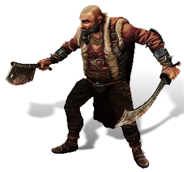
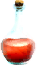

Открыть в интерактивной вики →

| Уровень | 22 |
|---|---|
| Зоны атаки | ближняя, дальняя, ментальная |
| Шанс дропа 100% — уровни | 1-25 |
| Шанс дропа 90% — уровни | 26-30 |
| Шанс дропа 70% — уровни | 31+ |
| Группа боссов | Непокой |
| Сила (PvE) | 443 |
| Аспект арены | Farao |
| Здоровье | 1100 |
| Мана | 500 |
| Выносливость | 1000 |
Локация
- Логово Главаря
- Пещера Главаря
Команда


Навыки


Дроп
 II
II  Путь непокоя
Путь непокоя 

Микстура здоровья Микстура выносливости Микстура маны
Микстура маны| Рары | Синергетики | Эпики | |||
 Рары Рары Рары Рары Рары Рары | 20 ур. |  | |||
Прочее:  Микстура здоровья Микстура здоровья  Микстура маны Микстура маны  Микстура выносливости Микстура выносливости | |||||
Путь по картам
Умения
- Пробитие защиты — таран обычная атака
- Бросок
- Толстокожесть — ярость боевой клич